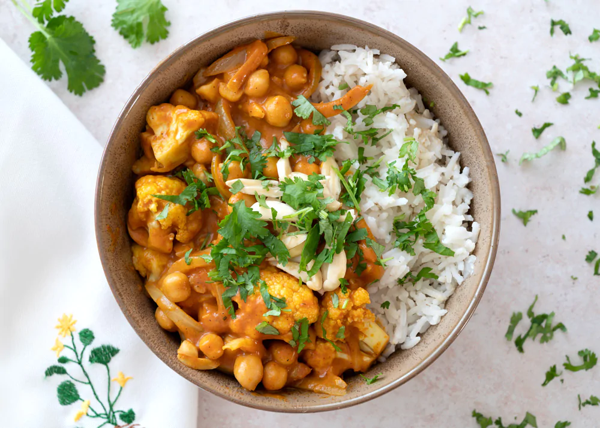
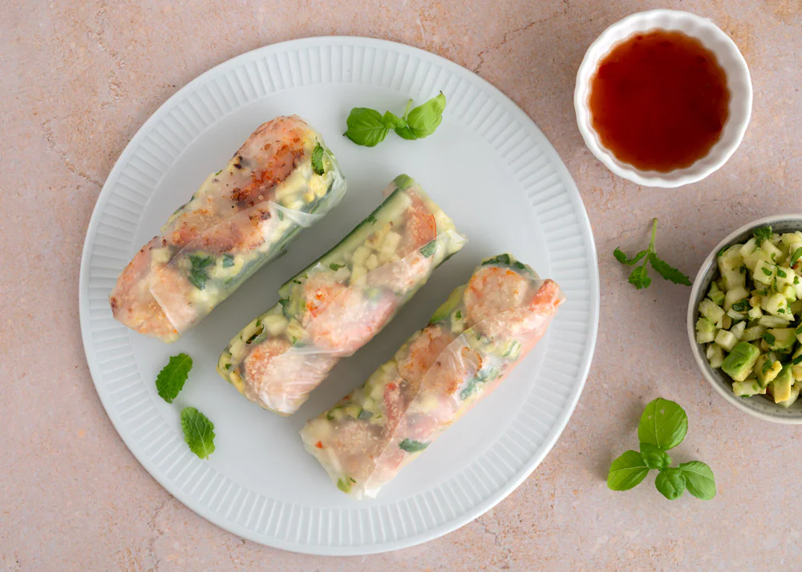
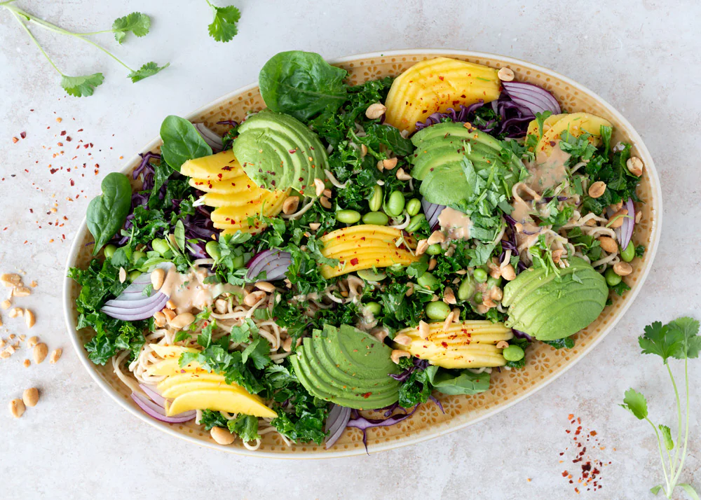

Vegetarisk Kasse
Udforsk smagen af grønne retter med vores Vegetariske Måltidskasse. Hver uge får du en række spændende retter baseret på friske, sæsonbetonede grøntsager og bælgfrugter. Perfekt til dig, der ønsker at reducere kødforbruget eller fuldt ud omfavne en vegetarisk livsstil. Retterne er nemme at tilberede, og der er masser af variation i smag og tekstur.
Bestil Nu

Familiefavoritter Kasse
Gør hverdagens madlavning nemmere med vores Familiefavoritter. Denne måltidskasse er fyldt med retter, som hele familien vil elske. Med en blanding af klassiske og nye smagsoplevelser sikrer vi, at både børn og voksne kan spise sig mætte med sunde og velsmagende måltider. Alle opskrifter er børnevenlige og hurtige at tilberede.
Bestil Nu

Hurtig Kasse
Til dig med en travl hverdag har vi sammensat vores Hurtig Måltidskasse. Her får du enkle opskrifter, som kan være klar på under 30 minutter, uden at gå på kompromis med smag eller kvalitet. De nemme trin-for-trin instruktioner sørger for, at du får et lækkert og mættende måltid uden stress.
Bestil Nu